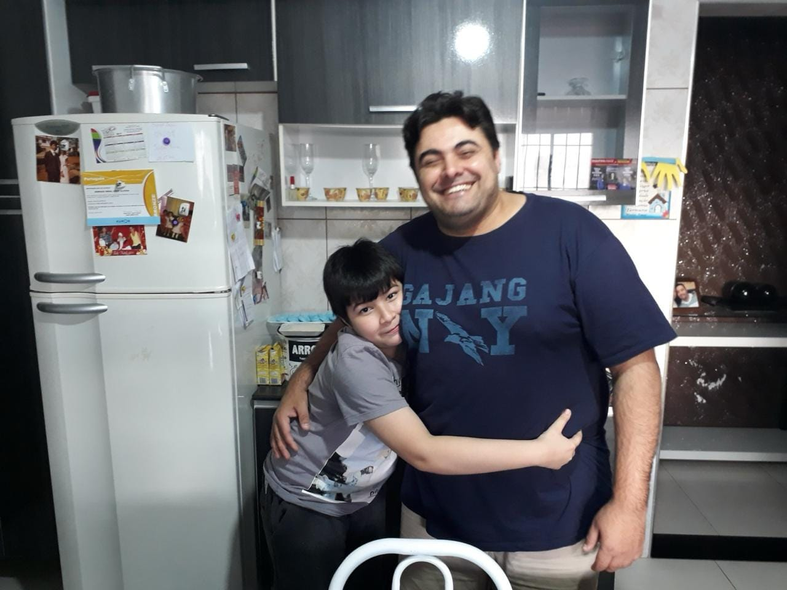
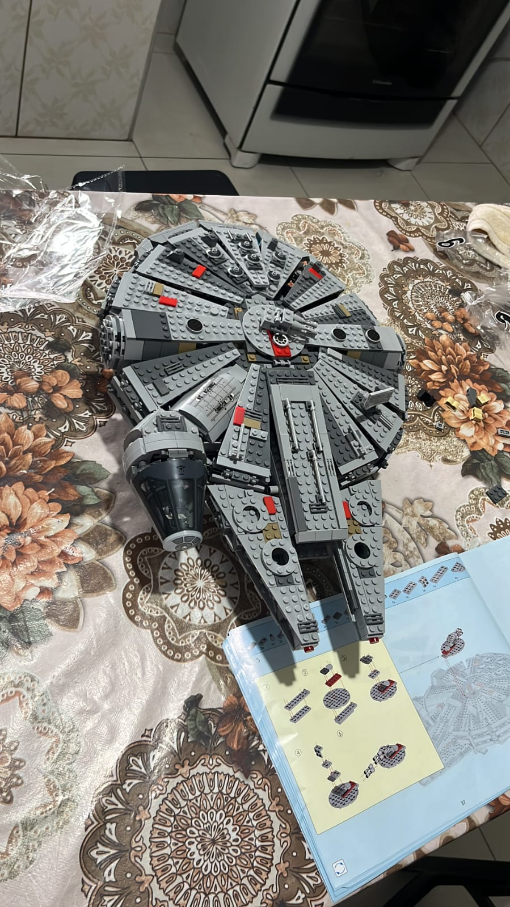

Por que Anakin e Darth Vader?
Dois nomes, mas a mesma pessoa: Anakin e seu alter ego, Darth Vader. E, no mundo real, nesta galáxia não tão distante: Henrique e seu alter ego, Ismael.

Como conheci Star Wars
Eu conheci Star Wars através do meu finado tio Mano! Ele gostava, mas não era tão obcecado quanto eu acabei ficando. Mas foi ele quem me apresentou a tudo isso e me fez me apaixonar por essa história intergaláctica.
Foi ele quem me apresentou Darth Vader no Episódio V, onde ele tem uma aura de vilão e, ao mesmo tempo, de anti-herói incompreendido. Foi ele quem me mostrou o quão tentador o Lado Sombrio pode ser. E o quão insensato e imoral o código Jedi era. E que o correto no final era manter o equilíbrio!

Onde isso está Presente Hoje?
Para ser bem sincero, em quase tudo o que aplico hoje, tento transmitir aquilo que aprendi nos filmes: a importância do equilíbrio. É claro que, em alguns momentos, acabo sendo mais autoritário, como Darth Vader, e, às vezes, possuo a sabedoria de Luke. No final, estamos todos em um pêndulo, onde um lado, às vezes, sobressai ao outro!
Além disso, eu sou um grande entusiasta de Lego, principalmente se ele for de Star Wars!! Atualmente eu possuo uma Millenium Falcon mas espero em breve poder comprar outros relacionados! É claro que é justo eu falar também, geralmente eu compro de marcas genéricas em sites de importação. Infelizmente Lego no Brasil não é barato!!

Porque Vader e Anakin?
Eu conheci o bullying muito cedo, por volta dos meus 10 anos de idade, por conta do meu porte físico, e isso sempre me abalou muito. Isso vinha de quem estava perto, de quem eu chamava de amigos. Então, com o tempo, fui me tornando tolerante a essas situações, apenas para me encaixar e não ser excluído dos grupos.
Entretanto, quando fiz 13 anos, por incentivo da minha vó, comecei a frequentar a academia. E, pasmem: em poucos meses, eu havia emagrecido e, com isso, os apelidos e as brincadeiras pararam. O problema foi que acabei desenvolvendo uma distorção de imagem, que evoluiu para uma anorexia. Até o dia em que desmaiei durante a aula de Educação Física e descobriram que eu estava anêmico.
Naquele dia, ao ver minha mãe chorar de desespero, com medo de onde eu poderia chegar, decidi que iria me esforçar ao máximo para me tornar uma pessoa saudável, forte e com um físico que me agradasse. E foi aí que nasceu o meu Darth Vader interior, o meu alter ego.
Conforme fui chegando aos 15 anos, idade em que comecei a desenvolver um físico interessante e surpreendente para a minha idade, fui me tornando uma pessoa "detestável". Passei a fazer tudo aquilo que um dia fizeram comigo, e isso se perpetuou até os meus 17 anos. Essa é a parte da minha história da qual mais sinto vergonha hoje em dia!
Porém, eu não era assim e não queria ser assim. Comecei a me questionar: "É assim que eu quero ser lembrado?". Foi aí que comecei a trabalhar para desconstruir essa imagem ruim que havia construído. Eu ajudava as pessoas, era simpático e tentava, de todas as formas, mudar aquilo que havia causado. E deu certo com algumas pessoas; com outras, não. E elas tinham todo o direito de não me perdoar, afinal, eu havia causado dor a elas, a mesma dor que um dia causaram a mim. Eu sabia como era sentir aquilo e, mesmo assim, fiz o mesmo. Mas reconheci meus erros e tento melhorar todos os dias, para finalmente encerrar o meu arco de vilão.